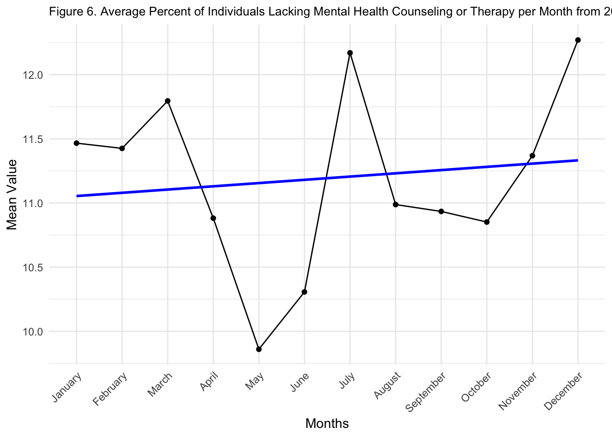

Rows: 10404 Columns: 15
── Column specification ────────────────────────────────────────────────────────
Delimiter: ","
chr (10): Indicator, Group, State, Subgroup, Phase, Time Period Label, Time ...
dbl (5): Time Period, Value, LowCI, HighCI, Suppression Flag
ℹ Use `spec()` to retrieve the full column specification for this data.
ℹ Specify the column types or set `show_col_types = FALSE` to quiet this message.Full Report
Trends in Lack of Mental Health Care Since the COVID-19 Pandemic
Introduction
Research Question
Is there a trend in individuals in the United States that need counseling or therapy for mental health disorders but did not receive relevant care? Is there a difference between different demographics (age, education status) and/or between different years (2022, 2021, 2020) and months within the year?
Background
Mental health is becoming an increasing concern since the 2019 coronavirus pandemic, with heightened stress, fear, and loneliness, along with elevated rates of “anxiety, anger, confusion, and posttraumatic symptoms” (Khan et al., 2022; Pakpour and Griffiths, 2020; Christoffersen et al., 2023). Though not discounting community and individual resilience in the face of these difficulties, overall the pandemic appears to have negative impacts on psychological health across the board (Mills et al., 2022). Many contributing factors have been identified in literature, including social distancing, social isolation, quarantine, and misinformation (Khan et al., 2022; Ahorsu et al., 2020; Sakib et al., 2020). In light of this, variation in experiences across different groups may be important to further examine to better understand the intricacies within these cohorts. More specifically, by identifying cohorts that may not be receiving care needed, barriers to access and resources may be more clearly outlined and show insight into the development of potentially more effective targeted therapies and care options to promote improved health of all populations.
Different age groups may be understood to have had variety of experience in the context of policies and regulations – for instance, college-age adults experienced closure of university campuses, along with lack of in-person events and ceremonies (e.g. orientations and graduations). On the other hand, many working adults had to transition to remote working environments along with parents of young children struggling to balance childcare at home without in-person schools, while essential workers were subject to high-stress environments and lack of resources during this time. Senior isolation was a rising issue, along with lack of health care and access for chronic diseases. While the resulting psychological pressures of these experiences may not necessarily be specific to any one age group, it may play a role in possible differences in rates of mental health disorders and treatment since then. Additionally, with misinformation being rampant and a large factor for many in their decision-making process during the pandemic, education status may be a significant component influencing prevalence of mental health disorders and treatment access during this time.
With the evolution of the pandemic since 2019, along with administration of vaccinations, political transitions and economic rises/falls, and almost normalization of the pandemic-induced experience, it is also worth examining any potential trends in mental health disorders and treatments over time.
Data
This data is acquired from the CDC (Centers for Disease Control and Prevention) Household Pulse Surveys, an experimental data system created by partnership between the National Center for Health Statistics (NCHC) and the U.S. Census Bureau along with other federal agencies. The intention was to “rapidly respond and provide relevant information about the impact of the coronavirus pandemic in the U.S. Data collection” beginning April 23, 2020. Specifically, this dataset is called “Mental Health Care in the Last 4 Weeks” where each four week period was a collection time point. The surveys were disseminated online, via email and text message with randomized selection of participants contacted to respond for each linked household. Sample sizes for each measured time period of 4 weeks range from 50,000 to 93,000, with weights response rates from 5.80% to 10.30%. (See https://www.cdc.gov/nchs/covid19/pulse/mental-health-care.htm for more information.)
Methods
Data Wrangling
In the original dataset, there are a total of 15 columns and 10404 rows. The rows are divided into four uniquely labelled sections with respect to Indicators, with 2601 records per section.
See Table 1a. for more details regarding the columns. There are a number of missing measures noted for the column of interest “Value”. This is due to the way the data was collected: there are a number of time phases during which the data is recorded, with a “break week” in between every 4th week (labelled as “Phase -1” for that column). As such, when examining closer, this results in an offset in time measurements seen (i.e., measured times are not exactly every 4 weeks or necessarily starting in the first week of each month; rather it looks more similar to a pattern of every 5 weeks) which may have some influence on the differences in total measures per year and month.
See Table 1b. for more details regarding the rows. See Table 1c. through 1e. for more details regarding methods in identification of relevant rows and columns.
For the purpose of this project and research question, I will be focusing on select columns. See Table 2. for more details.
| Column | Counts |
|---|---|
| Indicator | 10404 |
| Group | 10404 |
| State | 10404 |
| Subgroup | 10404 |
| Phase | 10404 |
| Time Period | 10404 |
| Time Period Label | 10404 |
| Time Period Start Date | 10404 |
| Time Period End Date | 10404 |
| Value | 9914 |
| LowCI | 9914 |
| HighCI | 9914 |
| Confidence Interval | 9914 |
| Quartile Range | 6732 |
| Suppression Flag | 22 |
To determine the columns relevant to my research question as shown in Table 2., I first determined how many potential indicators (i.e. mental health treatment), as well as groups and subgroups, were available.
There are 4 different indicators.
Attaching package: 'dplyr'The following objects are masked from 'package:stats':
filter, lagThe following objects are masked from 'package:base':
intersect, setdiff, setequal, union| Row | Counts |
|---|---|
| Took Prescription Medication for Mental Health, Last 4 Weeks | 2601 |
| Received Counseling or Therapy, Last 4 Weeks | 2601 |
| Took Prescription Medication for Mental Health And/Or Received Counseling or Therapy, Last 4 Weeks | 2601 |
| Needed Counseling or Therapy But Did Not Get It, Last 4 Weeks | 2601 |
There are 10 different groups.
| Group |
|---|
| National Estimate |
| By Age |
| By Sex |
| By Presence of Symptoms of Anxiety/Depression |
| By Race/Hispanic ethnicity |
| By Education |
| By State |
| By Disability status |
| By Gender identity |
| By Sexual orientation |
For the age group, there are 7 subgroups. For the education group, there are 4 subgroups.
Warning: Returning more (or less) than 1 row per `summarise()` group was deprecated in
dplyr 1.1.0.
ℹ Please use `reframe()` instead.
ℹ When switching from `summarise()` to `reframe()`, remember that `reframe()`
always returns an ungrouped data frame and adjust accordingly.| Age Subgroups |
|---|
| 18 - 29 years |
| 30 - 39 years |
| 40 - 49 years |
| 50 - 59 years |
| 60 - 69 years |
| 70 - 79 years |
| 80 years and above |
Warning: Returning more (or less) than 1 row per `summarise()` group was deprecated in
dplyr 1.1.0.
ℹ Please use `reframe()` instead.
ℹ When switching from `summarise()` to `reframe()`, remember that `reframe()`
always returns an ungrouped data frame and adjust accordingly.| Education Subgroups |
|---|
| Less than a high school diploma |
| High school diploma or GED |
| Some college/Associate's degree |
| Bachelor's degree or higher |
This dataset contains phase and time periods, but these measurements are not categorized by month or year. For the purpose of my time periods of interest, I have created a year and month category using the time periods provided in the dataset as well.
| Name | Details |
|---|---|
| Indicator | Needed Counseling or Therapy But Did Not Get It, Last 4 Weeks |
| Group 1 | Age |
| Group 2 | Education |
| Group 1 Subgroups | 7 age subgroups |
| Group 2 Subgroups | 4 education subgroups |
| Time | Year, Month |
| Value | Percent |
Exploratory Data Analysis (EDA)
To review, the EDA Checklist:
Formulate a question - See above.
Read in the data - See above.
Check the dimensions and headers and footers of the data - See above.
Check the variable types in the data - See above.
Take a closer look at some/all of the variables - See Exploratory Data Analysis below.
Validate with an external source - See Introduction above, Exploratory Data Analysis below.
Conduct some summary statistics to answer the initial question - See Exploratory Data Analysis, Results/Data Visualization below.
Make exploratory graphs - see Results/Data Visualization below.
The next sections look at the Age and Education groups more closely.
Age
18 - 29 years 30 - 39 years 40 - 49 years 50 - 59 years
152 152 152 152
60 - 69 years 70 - 79 years 80 years and above
152 152 152 It is interesting how are all the counts are so perfect in each subgroup. However, upon consideration of the data, each time period of measurement has one record of each of the subgroups, and is not divided into data points for each individual that may have responded to the survey for each of the indicators. In a sense, the data provided in the dataset is not the raw data from the survey, but has already gone through some processing. To note, similar findings were observed for Education subgroups. For the purpose of my question, I am more interested in the values measured within each of these subgroups.
To start, I checked for any NA’s in my values for the Age subgroups.
[1] TRUE Min. 1st Qu. Median Mean 3rd Qu. Max. NA's
1.40 9.50 16.90 15.96 22.10 33.90 153 Looking at the dataset, it looks like the number of missing values are present for all Age subgroups. However, it can be noted that except for the Age subgroup of “80 years and above”, all are missing values in the time period labelled as “Phase -1”. To review, “Phase -1” indicates break times between every measured 4 week periods. For the purposes of the following data analysis, it is reasonable to remove these missing values in all “Phase -1” time points as no measures were actively performed during these times. The code used to do so is shown below. The Age subgroup of “80 years and above” however does contain other time Phases that appear to be truly missing values. In this case, replacing them with the relevant Age subgroup mean is reasonable. The code used to do this is also shown below. Some possible explanations include considerations that population may not have been as well accounted for in this dataset or there were no participants in this age range during select phases of measurement or recruitment. The specific details are difficult to identify as no explanation is conveyed by the CDC or NCHS in reviewed materials, though it is stated that participants were randomly selected for invitations to respond to survey materials.
While the methods used identifies all missing values within the Age subgroups of interest (including Indicators and other columns that may not be relevant to the current research question), it is worth examining these missing values in their entirety, as this lends to greater understanding and direction for future study.
[1] "Missing values found in subgroup: 18 - 29 years"
# A tibble: 5 × 17
Indicator Group State Subgroup Phase `Time Period` `Time Period Label`
<chr> <chr> <chr> <chr> <chr> <dbl> <chr>
1 Took Prescriptio… By A… Unit… 18 - 29… -1 1 Dec 22, 2020 - Jan…
2 Received Counsel… By A… Unit… 18 - 29… -1 1 Dec 22, 2020 - Jan…
3 Took Prescriptio… By A… Unit… 18 - 29… -1 1 Dec 22, 2020 - Jan…
4 Needed Counselin… By A… Unit… 18 - 29… -1 1 Dec 22, 2020 - Jan…
5 Took Prescriptio… By A… Unit… 18 - 29… -1 1 Mar 30 - Apr 13, 2…
# ℹ 10 more variables: `Time Period Start Date` <date>,
# `Time Period End Date` <chr>, Value <dbl>, LowCI <dbl>, HighCI <dbl>,
# `Confidence Interval` <chr>, `Quartile Range` <chr>,
# `Suppression Flag` <dbl>, year <int>, month <int>
[1] "Missing values found in subgroup: 30 - 39 years"
# A tibble: 5 × 17
Indicator Group State Subgroup Phase `Time Period` `Time Period Label`
<chr> <chr> <chr> <chr> <chr> <dbl> <chr>
1 Took Prescriptio… By A… Unit… 30 - 39… -1 1 Dec 22, 2020 - Jan…
2 Received Counsel… By A… Unit… 30 - 39… -1 1 Dec 22, 2020 - Jan…
3 Took Prescriptio… By A… Unit… 30 - 39… -1 1 Dec 22, 2020 - Jan…
4 Needed Counselin… By A… Unit… 30 - 39… -1 1 Dec 22, 2020 - Jan…
5 Took Prescriptio… By A… Unit… 30 - 39… -1 1 Mar 30 - Apr 13, 2…
# ℹ 10 more variables: `Time Period Start Date` <date>,
# `Time Period End Date` <chr>, Value <dbl>, LowCI <dbl>, HighCI <dbl>,
# `Confidence Interval` <chr>, `Quartile Range` <chr>,
# `Suppression Flag` <dbl>, year <int>, month <int>
[1] "Missing values found in subgroup: 40 - 49 years"
# A tibble: 5 × 17
Indicator Group State Subgroup Phase `Time Period` `Time Period Label`
<chr> <chr> <chr> <chr> <chr> <dbl> <chr>
1 Took Prescriptio… By A… Unit… 40 - 49… -1 1 Dec 22, 2020 - Jan…
2 Received Counsel… By A… Unit… 40 - 49… -1 1 Dec 22, 2020 - Jan…
3 Took Prescriptio… By A… Unit… 40 - 49… -1 1 Dec 22, 2020 - Jan…
4 Needed Counselin… By A… Unit… 40 - 49… -1 1 Dec 22, 2020 - Jan…
5 Took Prescriptio… By A… Unit… 40 - 49… -1 1 Mar 30 - Apr 13, 2…
# ℹ 10 more variables: `Time Period Start Date` <date>,
# `Time Period End Date` <chr>, Value <dbl>, LowCI <dbl>, HighCI <dbl>,
# `Confidence Interval` <chr>, `Quartile Range` <chr>,
# `Suppression Flag` <dbl>, year <int>, month <int>
[1] "Missing values found in subgroup: 50 - 59 years"
# A tibble: 5 × 17
Indicator Group State Subgroup Phase `Time Period` `Time Period Label`
<chr> <chr> <chr> <chr> <chr> <dbl> <chr>
1 Took Prescriptio… By A… Unit… 50 - 59… -1 1 Dec 22, 2020 - Jan…
2 Received Counsel… By A… Unit… 50 - 59… -1 1 Dec 22, 2020 - Jan…
3 Took Prescriptio… By A… Unit… 50 - 59… -1 1 Dec 22, 2020 - Jan…
4 Needed Counselin… By A… Unit… 50 - 59… -1 1 Dec 22, 2020 - Jan…
5 Took Prescriptio… By A… Unit… 50 - 59… -1 1 Mar 30 - Apr 13, 2…
# ℹ 10 more variables: `Time Period Start Date` <date>,
# `Time Period End Date` <chr>, Value <dbl>, LowCI <dbl>, HighCI <dbl>,
# `Confidence Interval` <chr>, `Quartile Range` <chr>,
# `Suppression Flag` <dbl>, year <int>, month <int>
[1] "Missing values found in subgroup: 60 - 69 years"
# A tibble: 5 × 17
Indicator Group State Subgroup Phase `Time Period` `Time Period Label`
<chr> <chr> <chr> <chr> <chr> <dbl> <chr>
1 Took Prescriptio… By A… Unit… 60 - 69… -1 1 Dec 22, 2020 - Jan…
2 Received Counsel… By A… Unit… 60 - 69… -1 1 Dec 22, 2020 - Jan…
3 Took Prescriptio… By A… Unit… 60 - 69… -1 1 Dec 22, 2020 - Jan…
4 Needed Counselin… By A… Unit… 60 - 69… -1 1 Dec 22, 2020 - Jan…
5 Took Prescriptio… By A… Unit… 60 - 69… -1 1 Mar 30 - Apr 13, 2…
# ℹ 10 more variables: `Time Period Start Date` <date>,
# `Time Period End Date` <chr>, Value <dbl>, LowCI <dbl>, HighCI <dbl>,
# `Confidence Interval` <chr>, `Quartile Range` <chr>,
# `Suppression Flag` <dbl>, year <int>, month <int>
[1] "Missing values found in subgroup: 70 - 79 years"
# A tibble: 5 × 17
Indicator Group State Subgroup Phase `Time Period` `Time Period Label`
<chr> <chr> <chr> <chr> <chr> <dbl> <chr>
1 Took Prescriptio… By A… Unit… 70 - 79… -1 1 Dec 22, 2020 - Jan…
2 Received Counsel… By A… Unit… 70 - 79… -1 1 Dec 22, 2020 - Jan…
3 Took Prescriptio… By A… Unit… 70 - 79… -1 1 Dec 22, 2020 - Jan…
4 Needed Counselin… By A… Unit… 70 - 79… -1 1 Dec 22, 2020 - Jan…
5 Took Prescriptio… By A… Unit… 70 - 79… -1 1 Mar 30 - Apr 13, 2…
# ℹ 10 more variables: `Time Period Start Date` <date>,
# `Time Period End Date` <chr>, Value <dbl>, LowCI <dbl>, HighCI <dbl>,
# `Confidence Interval` <chr>, `Quartile Range` <chr>,
# `Suppression Flag` <dbl>, year <int>, month <int>
[1] "Missing values found in subgroup: 80 years and above"
# A tibble: 5 × 17
Indicator Group State Subgroup Phase `Time Period` `Time Period Label`
<chr> <chr> <chr> <chr> <chr> <dbl> <chr>
1 Needed Counselin… By A… Unit… 80 year… 2 15 Sep 16 - Sep 28, 2…
2 Received Counsel… By A… Unit… 80 year… 2 17 Oct 14 - Oct 26, 2…
3 Needed Counselin… By A… Unit… 80 year… 3 (O… 18 Oct 28 - Nov 9, 20…
4 Received Counsel… By A… Unit… 80 year… 3 (O… 20 Nov 25 - Dec 7, 20…
5 Took Prescriptio… By A… Unit… 80 year… -1 1 Dec 22, 2020 - Jan…
# ℹ 10 more variables: `Time Period Start Date` <date>,
# `Time Period End Date` <chr>, Value <dbl>, LowCI <dbl>, HighCI <dbl>,
# `Confidence Interval` <chr>, `Quartile Range` <chr>,
# `Suppression Flag` <dbl>, year <int>, month <int>#Remove rows with Phase -1
data_filter <- data %>%
filter(Phase != "-1")#Replace missing values in Age subgroup "80 years and above"
age_subgrp_80_mean <- mean(age_subgrp_80$Value, na.rm = TRUE)
age_subgrp <- age_subgrp %>%
mutate(Value = ifelse(Subgroup == "80 years and above" & is.na(Value), age_subgrp_80_mean, Value))The mean value within each of the 7 Age subgroups was reviewed.
# A tibble: 7 × 2
Subgroup mean_value
<chr> <dbl>
1 18 - 29 years 19.8
2 30 - 39 years 15.6
3 40 - 49 years 11.8
4 50 - 59 years 9.15
5 60 - 69 years 5.78
6 70 - 79 years 3.26
7 80 years and above 4.87A summary of the Age subgroups is shown below. Note there are no longer any missing values.
Min. 1st Qu. Median Mean 3rd Qu. Max.
1.40 5.10 9.60 10.05 14.80 23.10 Education
With regards to Education, a similar methodology was used as for Age. Similar to Age subgroups, the number of measured units was identical across all Education subgroups. Again, I checked for missing values, which were all again identified to be within the “Phase -1” time periods. For the purposes of the following data analysis, it is reasonable to again remove these missing values in all “Phase -1” time points. The code used to do this is identical to that described above with the Age subgroups.
Bachelor's degree or higher High school diploma or GED
152 152
Less than a high school diploma Some college/Associate's degree
152 152 To start, I checked for any NA’s in my values for the Education subgroups.
[1] TRUE Min. 1st Qu. Median Mean 3rd Qu. Max. NA's
5.60 10.50 15.05 16.40 22.00 30.00 80 [1] "Missing values found in subgroup: Less than a high school diploma"
# A tibble: 5 × 17
Indicator Group State Subgroup Phase `Time Period` `Time Period Label`
<chr> <chr> <chr> <chr> <chr> <dbl> <chr>
1 Took Prescriptio… By E… Unit… Less th… -1 1 Dec 22, 2020 - Jan…
2 Received Counsel… By E… Unit… Less th… -1 1 Dec 22, 2020 - Jan…
3 Took Prescriptio… By E… Unit… Less th… -1 1 Dec 22, 2020 - Jan…
4 Needed Counselin… By E… Unit… Less th… -1 1 Dec 22, 2020 - Jan…
5 Took Prescriptio… By E… Unit… Less th… -1 1 Mar 30 - Apr 13, 2…
# ℹ 10 more variables: `Time Period Start Date` <date>,
# `Time Period End Date` <chr>, Value <dbl>, LowCI <dbl>, HighCI <dbl>,
# `Confidence Interval` <chr>, `Quartile Range` <chr>,
# `Suppression Flag` <dbl>, year <int>, month <int>
[1] "Missing values found in subgroup: High school diploma or GED"
# A tibble: 5 × 17
Indicator Group State Subgroup Phase `Time Period` `Time Period Label`
<chr> <chr> <chr> <chr> <chr> <dbl> <chr>
1 Took Prescriptio… By E… Unit… High sc… -1 1 Dec 22, 2020 - Jan…
2 Received Counsel… By E… Unit… High sc… -1 1 Dec 22, 2020 - Jan…
3 Took Prescriptio… By E… Unit… High sc… -1 1 Dec 22, 2020 - Jan…
4 Needed Counselin… By E… Unit… High sc… -1 1 Dec 22, 2020 - Jan…
5 Took Prescriptio… By E… Unit… High sc… -1 1 Mar 30 - Apr 13, 2…
# ℹ 10 more variables: `Time Period Start Date` <date>,
# `Time Period End Date` <chr>, Value <dbl>, LowCI <dbl>, HighCI <dbl>,
# `Confidence Interval` <chr>, `Quartile Range` <chr>,
# `Suppression Flag` <dbl>, year <int>, month <int>
[1] "Missing values found in subgroup: Some college/Associate's degree"
# A tibble: 5 × 17
Indicator Group State Subgroup Phase `Time Period` `Time Period Label`
<chr> <chr> <chr> <chr> <chr> <dbl> <chr>
1 Took Prescriptio… By E… Unit… Some co… -1 1 Dec 22, 2020 - Jan…
2 Received Counsel… By E… Unit… Some co… -1 1 Dec 22, 2020 - Jan…
3 Took Prescriptio… By E… Unit… Some co… -1 1 Dec 22, 2020 - Jan…
4 Needed Counselin… By E… Unit… Some co… -1 1 Dec 22, 2020 - Jan…
5 Took Prescriptio… By E… Unit… Some co… -1 1 Mar 30 - Apr 13, 2…
# ℹ 10 more variables: `Time Period Start Date` <date>,
# `Time Period End Date` <chr>, Value <dbl>, LowCI <dbl>, HighCI <dbl>,
# `Confidence Interval` <chr>, `Quartile Range` <chr>,
# `Suppression Flag` <dbl>, year <int>, month <int>
[1] "Missing values found in subgroup: Bachelor's degree or higher"
# A tibble: 5 × 17
Indicator Group State Subgroup Phase `Time Period` `Time Period Label`
<chr> <chr> <chr> <chr> <chr> <dbl> <chr>
1 Took Prescriptio… By E… Unit… Bachelo… -1 1 Dec 22, 2020 - Jan…
2 Received Counsel… By E… Unit… Bachelo… -1 1 Dec 22, 2020 - Jan…
3 Took Prescriptio… By E… Unit… Bachelo… -1 1 Dec 22, 2020 - Jan…
4 Needed Counselin… By E… Unit… Bachelo… -1 1 Dec 22, 2020 - Jan…
5 Took Prescriptio… By E… Unit… Bachelo… -1 1 Mar 30 - Apr 13, 2…
# ℹ 10 more variables: `Time Period Start Date` <date>,
# `Time Period End Date` <chr>, Value <dbl>, LowCI <dbl>, HighCI <dbl>,
# `Confidence Interval` <chr>, `Quartile Range` <chr>,
# `Suppression Flag` <dbl>, year <int>, month <int>The mean value within each of the 4 Education subgroups was reviewed.
# A tibble: 4 × 2
Subgroup mean_value
<chr> <dbl>
1 Bachelor's degree or higher 10.6
2 High school diploma or GED 8.75
3 Less than a high school diploma 10.5
4 Some college/Associate's degree 13.5 A summary of the Education subgroups is shown below. Note there are no longer any missing values.
Min. 1st Qu. Median Mean 3rd Qu. Max.
6.90 9.30 10.80 10.84 12.05 15.10 Year
To review the year time points (2020, 2021, 2022), the number of measurements was also examined. Unlike that of Age and Education subgroups, the years had different number of measurements, as there were different time points in which the data began collection in the respective years, in addition to the offset measurements every 4 weeks with a break week in between (which has been filtered out due to the missing values during these breaks).
2020 2021 2022
2676 6332 1396 To check mean values for each year, I used a similar method to that used for Age and Education.
# A tibble: 3 × 2
year mean_value
<int> <dbl>
1 2020 10.5
2 2021 11.3
3 2022 12.2Month
To review the month time points, the number of measurements was also examined. Unlike that of Age and Education subgroups, the months had slightly different number of measurements, as there were different time points in which the data began collection in the respective months, in part due to the offset measurements every 4 weeks with a break week in between (which has been filtered out due to the missing values during these breaks).
1 2 3 4 5 6 7 8 9 10 11 12
896 692 1300 912 592 592 412 928 1824 668 576 1012 To check mean values for each month, I used a similar method to that used above.
# A tibble: 12 × 2
month mean_value
<int> <dbl>
1 1 11.5
2 2 11.4
3 3 11.8
4 4 10.9
5 5 9.86
6 6 10.3
7 7 12.2
8 8 11.0
9 9 10.9
10 10 10.9
11 11 11.4
12 12 12.3 Results/Data Visualization
Age
The general trend in age observed is that older age groups indicated fewer lacks in mental health care compared to younger age groups (See Figure 1.). The overall mean percent across all age groups was 10.05%. The ages 18-29 years old had the highest rates of lack of mental health care at 19.85%, and those 70-79 years old with the lowest rates at 3.26%. The one exception to the general decreasing trend with increasing age was for those 80 years and above, at 4.87%.
In term of temporal trends, it can be seen that lack of mental health care has generally increased from 2020 to 2022 across age groups (See Figure 2.). While each group continued to stay consistent with regards to greatest and least lack of mental health care (i.e. the 18-29 year old group stayed with the higher level of lack of mental health care in each year, the 70-79 year old group stayed with the lowest level), it can be observed that most groups have increasing percentage rate from 2020, through 2021, and into 2022. Some notable exceptions to this is again the 80 years and above cohort, which is observed to have a slight dip in 2021, though they continued on a similar upward trend in 2022. The 70-79 year old cohort also appears to have a relatively stable trend from 2020 to 2022, setting it apart from the other aged cohorts. Another point to note is that while all other age groups have a general increase in slope from 2021 to 2022, the 18-29 year old cohort did have a flattening slope during this time.

Saving 7 x 5 in image| Age Group | Average Percent |
|---|---|
| 18 - 29 years | 19.848485 |
| 30 - 39 years | 15.566667 |
| 40 - 49 years | 11.845455 |
| 50 - 59 years | 9.148485 |
| 60 - 69 years | 5.775758 |
| 70 - 79 years | 3.263636 |
| 80 years and above | 4.868449 |
Saving 7 x 5 in imageEducation
There is no distinct trend observed in education subgroups with regards to lack of mental health care, with fluctuations across education level (See Figure 3.). The overall mean percent across all education groups was 10.8%. Those with Less than a high school diploma had a 10.55% lack of mental health care, High school diploma or GED at the lowest value at 8.75%, Some college/Associate’s at the highest value at 13.47%, and Bachelor’s degree or higher at 10.61%.
In term of temporal trends, it can be seen that lack of mental health care has generally increased from 2020 to 2022 across education levels (See Figure 4.). While to order generally appeared to stay consistent in order through 2020 to 2021, in 2022 the Less than high school diploma cohort exceeded the Bachelor’s degree of higher cohort in percent of lack of mental health care. It is of potential interest in that the slope for those with High school diploma or GED decreased from 2021 to 2022, while the slope of other education level cohorts did have a consistent increase from 2020 to 2022.
Saving 7 x 5 in image| Education Level | Average Percent |
|---|---|
| Less than a high school diploma | 10.545454 |
| High school diploma or GED | 8.748485 |
| Some college/Associate's degree | 13.472727 |
| Bachelor's degree or higher | 10.609091 |
Saving 7 x 5 in imageYear and Month
The overall year average percents appears consistent with what was observed for both Age and Education subgroups in that there is a positive trend across the years for lack of mental health care (See Figure 5.). In 2020, an average of 10.54% lacked mental health care, with an increase to 11.27% in 2021, and at 12.20% in 2022.
The overall month average percent trend appears to be positive from January to December, though noticeably large fluctuations from month to month are observed (See Figure 6.). May was observed to be the month with the lowest percent lack of mental health care at 9.86%, with December the highest at 12.27%.
Saving 7 x 5 in image| Year | Average Percent |
|---|---|
| 2020 | 10.54118 |
| 2021 | 11.27309 |
| 2022 | 12.20470 |
`geom_smooth()` using formula = 'y ~ x'
Saving 7 x 5 in image
`geom_smooth()` using formula = 'y ~ x'
Attaching package: 'lubridate'The following objects are masked from 'package:base':
date, intersect, setdiff, union| Month | Average Percent |
|---|---|
| January | 11.466518 |
| February | 11.425694 |
| March | 11.795379 |
| April | 10.881858 |
| May | 9.860274 |
| June | 10.306849 |
| July | 12.170000 |
| August | 10.987879 |
| September | 10.934292 |
| October | 10.851748 |
| November | 11.368750 |
| December | 12.270130 |
Conclusions
This data showed that since 2020, lack of mental health care has been on a generally increasing trend across all examined groups (Age, Education level), with mild differences. This is concerning but perhaps not unexpected given potential lag time between the start of the pandemic in 2019, leading to possible increase in incidence of mental health issues, time between symptoms and clinical diagnosis, stigma of mental health illness, and then time to seek and receive care. Certainly, insurance and other systemic health delivery aspects play a role as well. Multiple factors must be considered for the reason behind this increase, and future surveying and research are necessary.
It is notable that the 18-29 year old Age group have consistently the highest rates of lack of mental health care for any age group examined. Possible explanations may include the school experience for most individuals in this cohort, as well as job market uncertainty, especially during the pandemic where mass layoffs occurred and lack of financial security was a common experience. More insight into these shared experiences may be worthwhile research topics, and potential aspects to include and address in care methods.
Examining Education level, those with High school diploma or GED were consistently lowest for lack of mental health care, while Some college/Associate’s degree was consistently the highest. It is uncertain why this might be the case, as neither would be categorized as the greatest or lowest level of education in the levels measured in this dataset, so education may be a confounding factor in levels of mental health care access. Another thought may be that both higher and lower levels of education (i.e., Bachelor’s degree of higher, Less than a high school diploma) may have both protective and risk factors for mental health illness and/or healthcare access, resulting in a more buffered level of received care in the range of education levels measured. Further research is needed to determine this observation, and consideration of social networks, environmental exposures, and other stressors are warranted.
With regards to the monthly fluctuations, one potential explanation may be related to school year schedules and holidays — in general, it may be that during the summer holidays (July) and winter holidays (November - January), individuals may traditionally have group and family gatherings which may have been restricted during the pandemic as well as a setting of high-stress, leading to increasing need for mental health care as well as potential unwillingness to seek related care. Typically, March - May is leading up to the end of the school year and start of the summer holidays/season, which may be a mental relief or positive mental expectation for individuals, leading to lower need for mental health care or potential motivation to seek care.
To conclude, this data showed a positive trend in lack of mental health care across groups. Further research is recommended to examine exact causes and influences on this trend.
References
Mental health care in the last 4 weeks | Data | Centers for Disease Control and Prevention. (2022, November 28). https://data.cdc.gov/NCHS/Mental-Health-Care-in-the-Last-4-Weeks/yni7-er2q
Centers for Disease Control and Prevention. (2022, July 20). Mental health care - household pulse survey - covid-19. Centers for Disease Control and Prevention. https://www.cdc.gov/nchs/covid19/pulse/mental-health-care.htm
Khan, K. S., Mamun, M. A., Griffiths, M. D., & Ullah, I. (2022). The Mental Health Impact of the COVID-19 Pandemic Across Different Cohorts. International journal of mental health and addiction, 20(1), 380–386. https://doi.org/10.1007/s11469-020-00367-0
Christoffersen LA, Helenius D, Schwinn M, Erikstrup C, Hjalgrim H, Nissen J, Banasik K, Nielsen K, Kaspersen KA, Dinh KM, Bruun MT, Ostrowski SR, Sækmose S, Hansen TF, Werge T, Didriksen M, Pedersen OB. Experience of loneliness during the COVID-19 pandemic: a cross-sectional study of 50 968 adult Danes. BMJ Open. 2023 Apr 26;13(4):e064033. doi: 10.1136/bmjopen-2022-064033. PMID: 37185636; PMCID: PMC10151242.
Pakpour AH, Griffiths MD. The fear of COVID-19 and its role in preventive behaviors. Journal of Concurrent Disorders. 2020;2(1):58–63. doi: 10.54127/WCIC8036.
Ahorsu, D. K., Lin, C. Y., Imani, V., Saffari, M., Griffiths, M. D., & Pakpour, A. H. (2020). The fear of COVID-19 scale: Development and initial validation. International Journal of Mental Health and Addiction. 10.1007/s11469-020-00270-8.
Sakib, N., Mamun, M. A., Bhuiyan, A. I., Hossain, S., Al Mamun, F., Hosen, I., et al. (2020). Psychometric validation of the Bangla fear of COVID-19 scale: confirmatory factor analysis and Rasch analysis. International Journal of Mental Health and Addiction. 10.1007/s11469-020-00289-x.
Mills, D. J., Petrovic, J., Mettler, J., Hamza, C. A., & Heath, N. L. (2022). The good, the bad, and the mixed: Experiences during COVID-19 among an online sample of adults. PloS one, 17(6), e0269382. https://doi.org/10.1371/journal.pone.0269382